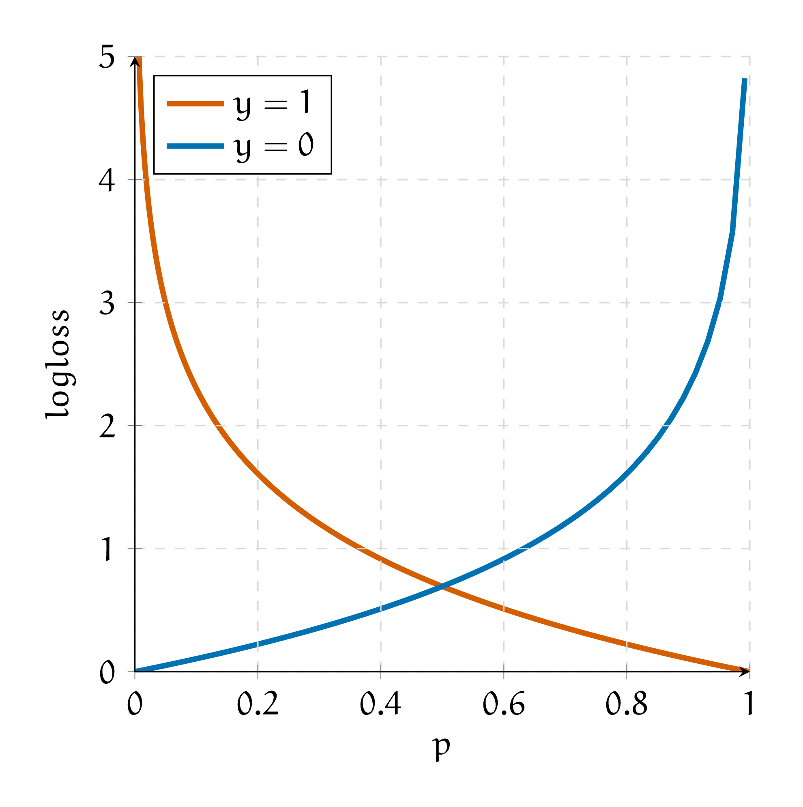

2. Логистические потери и softmax#
Маша решает задачу классификации. Она закодировала классы единичками и нулями. Логистическая функция потерь для одного наблюдения будет выглядеть как
Под \(p_i\) имеется в виду \(\mathbb{P}(y_i = 1 \mid x)\).
а) Нарисуйте логистические потери для \(y_i = 1\) и \(y_i = 0\) на графике. По оси абсцисс отложите \(p_i\), а по оси ординат значение функции потерь. Объясните, зачем от \(p_i\) нужно брать логарифм. Почему нельзя оптимизировать вместо logloss функцию
Решение
Если \(y_i = 1,\) от нашей функции потерь останется только первое слагаемое, \(-\ln p_i\). Если \(y_i = 0\), останется только второе слагаемое, \(-\ln (1 - p_i)\). Изобразим их на графике
{kind=link}
Если \(y_i = 1,\) мы хотим, чтобы \(p_i = \mathbb{P}(y_i = 1 \mid x)\) было как можно больше. Если \(p_i\) оказалась маленькой, штраф большой, если \(p_i\) оказалось большим, штраф будет маленьким. При этом, чем ближе \(p_i\) к единице, тем меньше мы его хотим увеличить. Такую нелинейность штрафа нам даёт логарифм. При \(y_i = 0\) логика точно такая же, но уже с \(\mathbb{P}(y_i = 0 \mid x)\).
Если мы сделаем штраф линейным, у такой функции потерь будет много проблем. Во-первых, пропадает нелинейность. Прирост ошибки в каждой точке одинаковый. Нам бы хотелось за мелкие ошибки штрафовать несерьёзно.
Во-вторых, из-за линейности такую функцию сложно оптимизировать. В-третьих, выхлоп модели нельзя будет интерпретировать как \(\mathbb{P}(y = 1 \mid x).\) Это можно формально доказать. Мы займёмся этим в последней задачке этого листочка.
У Маши три наблюдения, первое наблюдение — кит, остальные — муравьи. Киты кодируются как \(y_i = 1\), муравьи как \(y_i = 0\). В качестве регрессоров Маша берёт номера наблюдений \(x_i = i\). После этого Маша оценивает логистическую регрессию с константой. В качестве функции потерь используются логистические потери.[1]
б) Выпишите для данной задачи функцию потерь, которую минимизирует Маша.
Решение
Модель будет выглядеть как
Это обычная логистическая регрессия. Иначе говоря, это нейронная сеть, которая состоит из одного нейрона с сигмоидой в качестве функции активации.
Мы будем опимизировать логистические потери, то есть
Подставим наблюдения и получим
Мы воспользовались тем, что \(\sigma(-t) = 1 - \sigma(t).\)
в) При каких оценках коэффициентов логистической регрессии эта функция достигает своего минимума?
Hint: Изобразите наблюдения на числовой прямой и подумайте как должна будет вести себя идеальная сигмоида. Обратите внимание, что выборка линейно-разделима.
Решение
Тут нужна картинка неописуемой красоты!
г) Маша чуть внимательнее присмотрелась к своему третьему наблюдению и поняла, что это не муравей, а бобёр. Теперь ей нужно решать задачу классификации на три класса. Как надо специфицировать выход из нейронной сетки и функцию потерь?
Решение
В случае бинарной классификации нейросеть выплёвывает один выход. К нему мы применяем сигмоиду и получаем вероятность первого класса. Если нам хочется получить вероятность нулевого класса, достаточно вычесть получившуюся вероятность из единицы.
Когда у нас появляется третий класс, одного выхода недостаточно. Обычно на последнем слое нейросети выставляют число нейронов, равное числу классов, а после применяют функцию softmax
Тогда мы получаем \(K\) выходов, лежащих на отрезке \([0;1]\). Они интерпретируются как уверенность нейросети в каждом из классов. В сумме эти выходы дают единицу.
{kind=link}
Логистические потери для \(K\) классов можно записать как
Здесь \([y_i = k]\) принимает значение равное единице, когда \(y_i = k,\) в остальных случаях это ноль.
Иногда числа, которые выплёвывает softmax слой интерпретируют как вероятность. Так можно делать не всегда. Выход нейросети всегда можно откалибровать так, чтобы он стал вероятностью.
В задаче классификации откалиброванным алгоритмом называют такой алгоритм, для которого доля положительных примеров (на основе реальных меток классов) для предсказаний в окрестности произвольной вероятности \(p\) совпадает с этим значением \(p\). Например, если взять объекты, для которых предсказанные вероятности близки к 0.7, то окажется, что среди них 70% принадлежат положительному классу.
Подробнее про калибровку алгоритмов можно почитать в конспекте по МО-1 с ФКН.
д) Маша уже обучила нейронную сетку и хочет построить прогнозы для двух наблюдений. Слой, который находится перед softmax выдал для этих двух наблюдений следующий результат: \((1, -2, 0)\) и \((0.5, -1, 0)\).
Чему равны вероятности получить кита, муравья и бобра для этих двух наблюдений?
Решение
Применим softmax к первому наблюдению
По аналогии
е) Пусть первым был кит, а вторым бобёр. Чему будет равна logloss-ошибка?
Решение
Кит на первой позиции, бобёр на последней. Значит logloss примет значение
ё) Буква ё важна. Об этом вам скажут Лёв Толстой и Пафнутий Чебышёв. Объясните, почему softmax считают сглаженным вариантом arg max.
Решение
Softmax пытается заострить, преувеличить разницу между полученными значениями. Она выдаёт значения близкие к нулю для всех \(z_j,\) которые существенно меньше максимального. При этом softmax, в отличие от arg max, дифференцируема.
ж) Пусть у Маши есть два класса. Она хочет выучить нейросеть. Она может учить нейронку с одним выходом и сигмоидой в качестве функции активации либо нейронку с двумя выходами и softmax в качестве функции активации. Как выходы этих двух нейронок взаимосвязаны между собой?
Решение
Если мы учим нейросетку с одним выходом и сигмоидой, мы получаем на выходе
Если у нас есть два выхода и мы применяем к ним softmax, мы получим
Чтобы из второго элемента вектора получить сигмоиду, надо положить \(z_1 = 0, z_2 = z\). Посмотрим, что в таком случае будет происходить с первым элементом
Получилось, что первый элемент представляет из себя вероятность того, что сетка выплюнула нулевой класс.
з) Докажите, что \(\text{softmax}(z + c) = \text{softmax}(z)\), где \(c\) — какая-то константа, прибавленная ко всем выходам слоя. Как этот факт позволяет сделать \(\text{softmax}\) численно устойчивой функцией и упростить для компьютера оптимизацию нейросети?
Решение
При поиске softmax мы ищем экспоненты, в памяти компьютера может произойти переполнение из-за больших чисел. Возникнут бесконечности и оптимизация нейронной сетки умрёт.
Если добавить ко всем входам нейронки одинаковую константу, значение sofrmax не изменится
Из-за этого, в нейросетях считают устойчивый к переполнению softmax
и) Предположим, что на последнем слое найшей нейросети мы используем softmax. В качестве функции потерь мы используем \(\text{logloss}\). Как будет Выглядеть производная \(\frac{\partial \text{logloss}}{\partial z}\)?
Решение
Нам надо найти производную \(\frac{\partial \text{logloss}}{\partial z} = \frac{\partial \text{logloss}}{\partial p} \cdot \frac{\partial p}{\partial z}.\) Будем рассуждать в терминах одного наблюдения. Начнём с softmax
На вход в softmax идет \(k\) элементов, на выходе получается \(k\) элементов. Нам надо взять производную каждого по каждому. Получается, что производная softmax – это матрица размера \(k \times k.\) У нас будет две ситуации: \(i = j\) и \(i \ne j\). Начнёмс с \(i = j\)
Продолжим случаем \(i \ne j\)
Получается, что производная выглядит как
Давайте для удобства перепишем метки классов в OHE виде. Если \(y_i = k,\) мы будем представлять его в виде вектора, где на \(k-\)ой позиции стоит единица. Остальные элементы будут нулевыми. В этом пункте везде под \(y_i\) мы будем иметь в виду такой вектор. Для одного наблюдения logloss можно записать как
Берём производную
Подставим в формулу производную softmax
Функция \(\text{logloss}\) бьёт из векторов \(z\) в константы. Производной будет вектор размера \(K\). Ровно такой вектор у нас и получается, то есть \(p - y\).
Мы нашли производную для одного наблюдения. Когда наблюдений становится много, мы должны просуммировать все потери по ним. Производная суммы будет равна сумме производных.